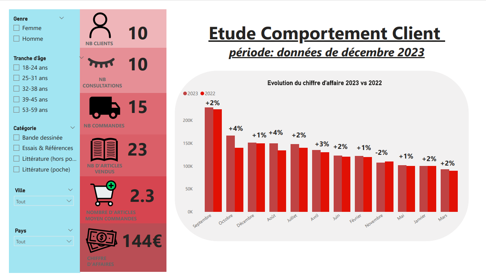
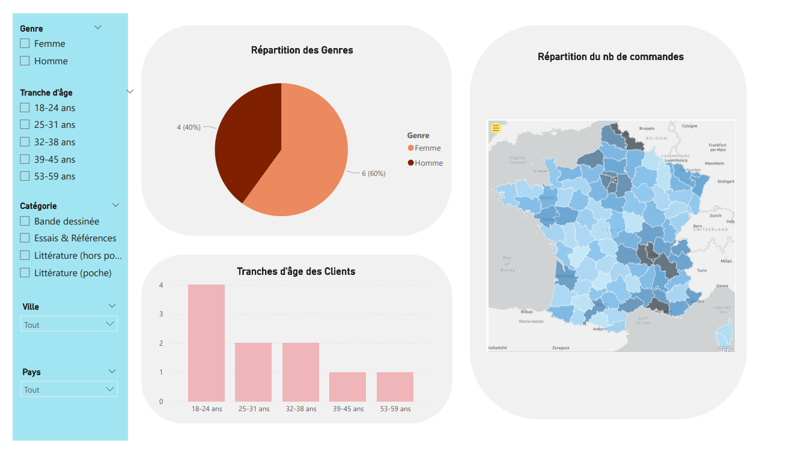
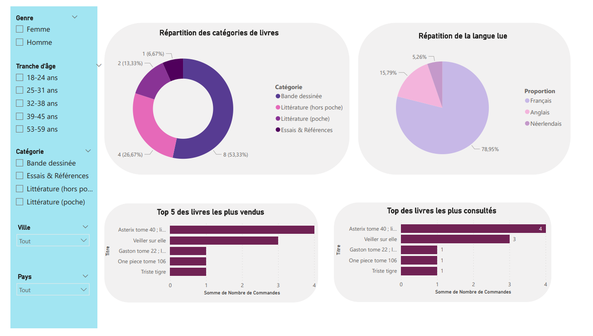
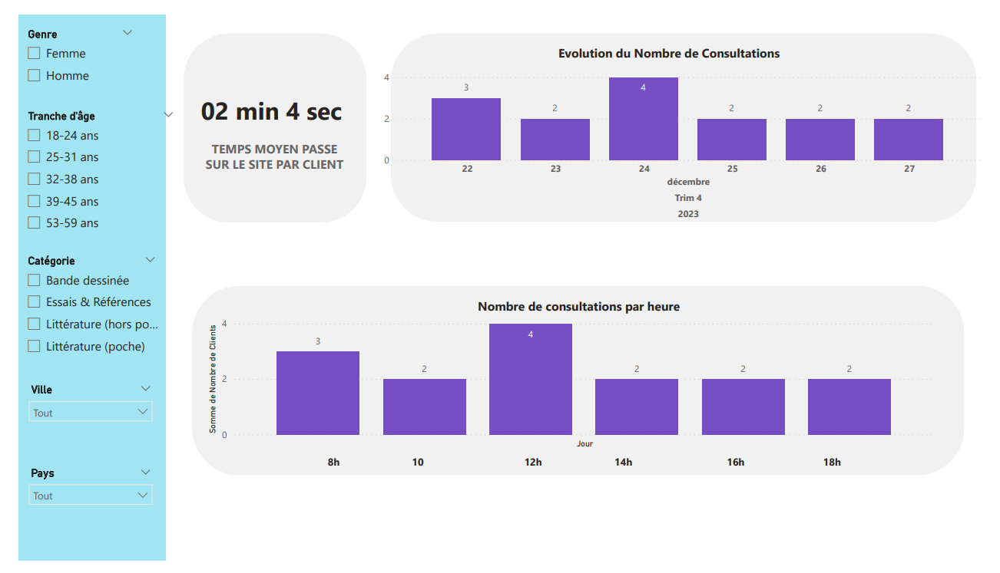
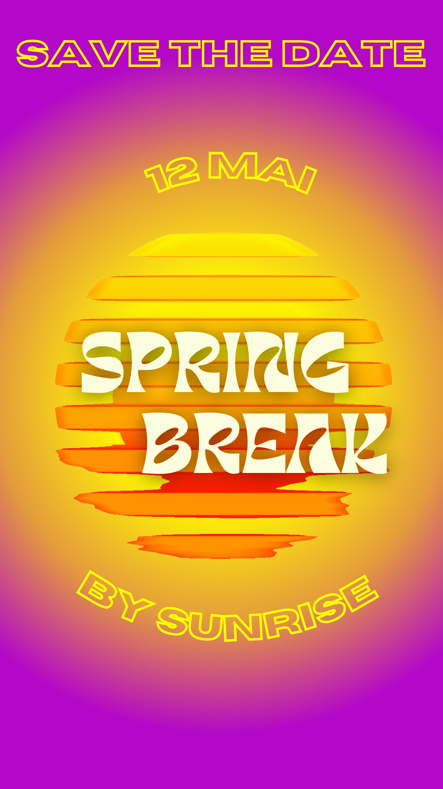
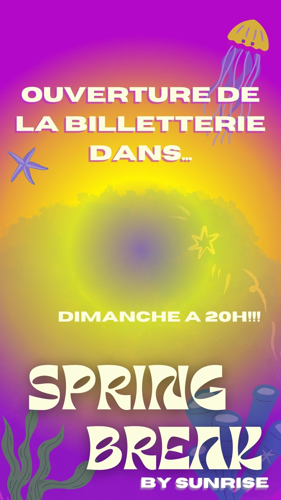

Compétences

Automatisation du Processus d'Affectation des Taxes ECO TLC
Celio
Automatisation du Processus d'Affectation des Taxes ECO TLC
Contextualisation
Depuis mars, je suis en charge d'un projet chez Celio. Le projet vise à automatiser le processus annuel d'affectation des taxes ECO TLC à chaque article, une responsabilité auparavant gérée par l'équipe de comptabilité. Pour ce projet, j'ai collaboré avec plusieurs équipes. L'équipe Finance, qui était la demandeuse, l'équipe IT Fonctionnelle, qui a aidé à gérer le problème, et l'équipe IT Développeuse, qui a développé les programmes. L'objectif est d'adapter un outil existant pour offrir plus de fonctionnalités et automatiser un processus, facilitant ainsi le travail de l'équipe demandeuse. Cependant, les résultats concrets de ce projet sont toujours attendus.
Etapes
Dans le cadre de mes responsabilités, j’ai suivi plusieurs étapes:
1. Organisation et direction du projet en veillant au respect des délais, de la qualité et des coûts.
2. Mené des réunions avec les équipes concernées pour comprendre leurs besoins spécifiques.
3. Rédaction d'une spécification fonctionnelle qui traduisait ces besoins et décrivait la manière dont le projet allait être orchestré.
4. Présentation de la solution technique à l'équipe de comptabilité.
5. Attribution des tâches aux développeurs.
6. Réalisation de tests pour vérifier si les programmes répondent bien aux besoins exprimés.
7. Test des développements pour voir s'ils fonctionnaient comme souhaité et s'ils n'avaient pas de répercussions sur les systèmes d'information.
Compétences
- Gestion de projet : organisation et direction du projet, respect des délais, de la qualité et des coûts.
- Compréhension des besoins spécifiques des équipes et traduction de ces besoins en une spécification fonctionnelle.
- Présentation de solutions techniques à l'équipe de comptabilité.
- Attribution et suivi des tâches de développement.
- Réalisation de tests pour vérifier la conformité des programmes aux besoins exprimés.
Outils
ERP SAP et outil de référentiel articles

Analyse du comportement des clients d'une entreprise de e-commerce de livres
IUT de Paris
Intégration de données dans un Data Warehouse: Analyse du comportement des clients d'une entreprise de e-commerce de livres
Contextualisation
Le projet "Intégrations de données dans un Data Warehouse" est un travail en duo, dont l'objectif est de comprendre le comportement des clients d'une entreprise de ecommerce de livres. Cela se fait à travers la conception d'une modélisation relationnelle, l'intégration de données dans un data warehouse et la restitution avec un reporting.Etapes
Afin de mener à bien notre projet, nous avons :1. Établi le cahier des charges fonctionnel.
2. Établi le cahier des charges techniques :
3. Réalisé la modélisation relationnelle des tables, défini les attributs, la granularité, l'additivité et le type de gestion des changements.
4. Créé les tables et inséré les données dans ces tables dans R à l’aide de requêtes SQL.
5. Restitué un reporting avec ces données à l’aide de Power BI.
Compétences
À travers ce projet, j'ai acquis de nombreuses compétences, dont :- Un rôle fonctionnel : Rôle de chefferie de projet dans lequel on fait une analyse de besoin, on interagit avec le métier, on analyse, on comprend, on synthétise et on restitue.
- Etude de faisabilité: Analyser la solution technique la plus adaptée et optimale, en intégrant les outils à disposition (qualité, coûts, délais).
- Analyse des besoins en visualisation de données : Pour avoir un reporting efficace, les graphiques doivent être parlants et pertinents. C'est pourquoi il faut trouver les types de graphiques adaptés aux KPI que l'on souhaite exploiter.
   
Création d'un site web Portfolio
IUT de Paris
Création d'un site web Portfolio
Ce projet universitaire de deux mois, réalisé entre mars et mai, avait pour but de concevoir un site web professionnel mettant en lumière mon parcours, mes compétences et mes réalisations, destiné aux recruteurs du monde professionnel et académique. L'objectif étant d'accroître la visibilité, attirer un trafic régulier et ainsi valoriser mes travaux accomplis et mes compétences acquises.Etapes:
J'ai suivi plusieurs étapes pour mener à bien ce projet :- Élaboration d'un cahier des charges: définition des objectifs, public cible, charte éditoriale et graphique et maquette complète du site web.
- Développement: j'ai commencé par créer la base avec HTML, puis j'ai personnalisé le site avec CSS. Finalement, j'ai dynamisé le site avec JavaScript.
- Remplissage de contenu: j'ai ajouté du texte, des images, des vidéos et d'autres contenus à mon site.
- Test: j'ai testé mon site web sur différents navigateurs et appareils pour m'assurer qu'il s'affiche correctement partout. J'ai corrigé tous les bugs ou problèmes qui se sont posés.
- Lancement: j'ai publié le site web via Github.
Compétences:
Ce projet m'a permis d'acquérir de nombreuses compétences :- Maîtrise du HTML, CSS et JavaScript pour la programmation web.
- Connaissance des principes de design et d'accessibilité web.
- Capacité à résoudre des problèmes de codage ou de design.
- Gestion de projet : respect des délais et gestion des problèmes.
Outils et langages:
HTML, CSS, Javascript, Github, CanvaDéveloppement d'une application de comparaison de voitures
IUT de Paris
Développement d'une application de comparaison de voitures
Contextualisation
Dans ce projet, notre objectif était de développer une application R Shiny permettant aux utilisateurs de trouver la voiture de leurs rêves en fonction de plusieurs critères et de comparer des voitures en cas de doute.Etapes
Pour ce faire, nous avons suivi plusieurs étapes :- Trouver une base de données répondant à nos besoins
- Nettoyer et transformer le jeu de données pour pouvoir l'exploiter
- Définir les critères à prendre en compte lors de l'achat d'une voiture
- Développer des tableaux et des cartes avec R Shiny
Compétences
Ce projet m'a permis d'acquérir de nombreuses compétences : -- Expérience utilisateur : comprendre les besoins et attentes des utilisateurs, offrir une expérience positive en facilitant leur interaction et ainsi améliorer la satisfaction des utilisateurs et leur fidélité.
- Maîtrise de R Shiny.
- Gestion de projet : respect des délais et gestion des problèmes.
Langage
R Shiny
Campagne de promotion d'une soirée BDE sur les réseaux sociaux
IUT de Paris
Campagne de promotion d'une soirée BDE sur les réseaux sociaux
Contextualisation
En tant que membre du pôle Communication/Audiovisuel du BDE de ma filière, notre mission était de promouvoir une soirée sur les réseaux sociaux avec l'objectif de vendre 400 places. Ce projet a été réalisé en collaboration avec les BDE des filières Info-COM, TC, Informatique et GEA. Grâce à cette stratégie de promotion digitale, nous avons réussi à atteindre notre objectif de vente de 400 places pour la soirée.Etapes
- Définition d'une identité visuelle : polices, couleurs, symboles
- Définition des éléments importants à mettre en valeur
- Mise en place d'un plan de communication : jours et horaires de publication les plus susceptibles d'être perçus
- Étude des éléments percutants et influençants pour un jeune sur les réseaux sociaux
- Création de stories et posts Instagram percutants
Compétences
Ce projet a été une expérience enrichissante qui m'a permis de développer et de renforcer diverses compétences clés, notamment :- Adaptabilité : Ce projet m'a amenée à collaborer avec des membres d'équipe provenant de diverses filières, ce qui m'a offert une perspective plus large et diversifiée. J'ai dû m'adapter rapidement à divers styles de communication et de travail, tout en apprenant à tirer parti de la richesse des différentes approches pour améliorer la qualité de notre travail.
- Travail d'équipe : Au cours de ce projet, j'ai découvert l'importance de l'écoute active pour comprendre les idées et les points de vue de mes collègues. J'ai appris à combiner les idées de chacun pour créer des solutions innovantes qui correspondent aux besoins de notre projet. Cette expérience a renforcé ma conviction que la collaboration et le partage d'idées sont essentiels pour réaliser des projets de grande envergure.
Outil
Canva 
Enquête sur le comportement écologique des départements de l'IUT de Paris
IUT de Paris
Enquête sur le comportement écologique des départements de l'IUT de Paris
Dans ce projet, nous avons visé à mesurer l'empreinte carbone de chaque département de l'institution basée sur leurs modes de transport. Cela nous a permis d'identifier les départements ayant l'impact environnemental le plus significatif. De plus, nous avons proposé des stratégies pour réduire les émissions de gaz à effet de serre et encourager des pratiques plus durables au sein de l'institution.Etapes:
J'ai suivi plusieurs étapes pour mener à bien ce projet :- Création d'un questionnaire partagé avec les étudiants et le personnel de chaque département pour comprendre leurs modes de transport et leur fréquence d'utilisation.
- Utilisation d'outils comme LimeSurvey pour collecter ces données.
- Nettoyage et analyse des données sur Excel.
- Calcul de l'impact environnemental de chaque département en termes d'émissions de gaz à effet de serre à partir de ces données.
- Présentation des résultats finaux à l'aide de PowerPoint.
Compétences:
Ce projet m'a permis d'acquérir de nombreuses compétences :- Conception et mise en œuvre d'enquêtes
- Calcul et interprétation de l'impact environnemental, en particulier en ce qui concerne les émissions de gaz à effet de serre
- Préparation et présentation de rapports de recherche à l'aide d'outils de présentation comme PowerPoint
- Gestion de projet : organisation, respect des délais et gestion des problèmes
- Travail d'équipe : collaboration avec différents départements et gestion des relations interpersonnelles